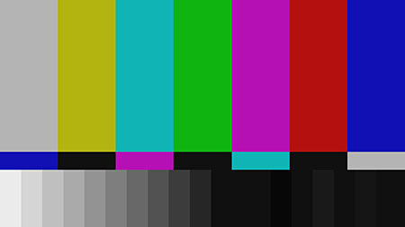

La technologie web est sans pareil, c’est une application d’internet, qui constitue une source d’information inépuisable pour nous les Hommes. En 2017, nous comptons près de 3,8 milliards d’internautes et 1,3 milliard de sites web.
[...]
Aujourd’hui, encore, il nous surprend par son accessibilité croissante au travers des nombreux réseaux sociaux, des applications mobiles et services toujours plus performants.
Pouvons-nous nous fier aux services et serveurs qui hébergent nos applications et sites web ? Comment répondre favorablement aux questions de performance, de stabilité et de protection ?
URL:xlwlx.fr